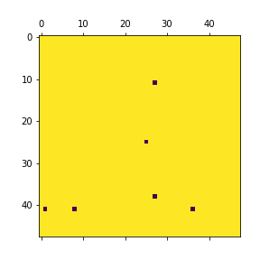
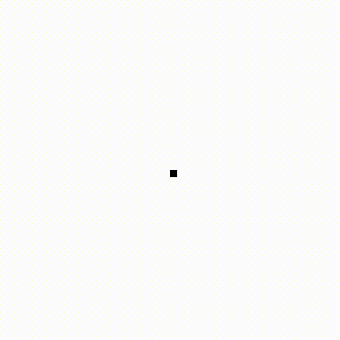
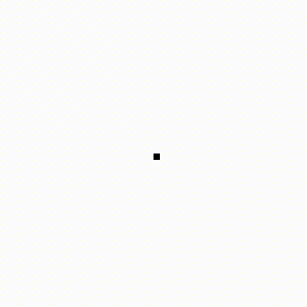
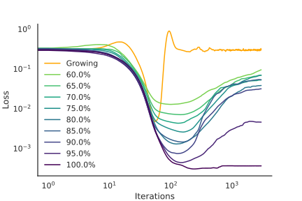
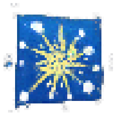
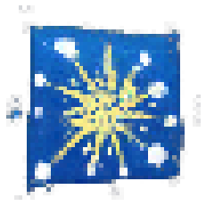
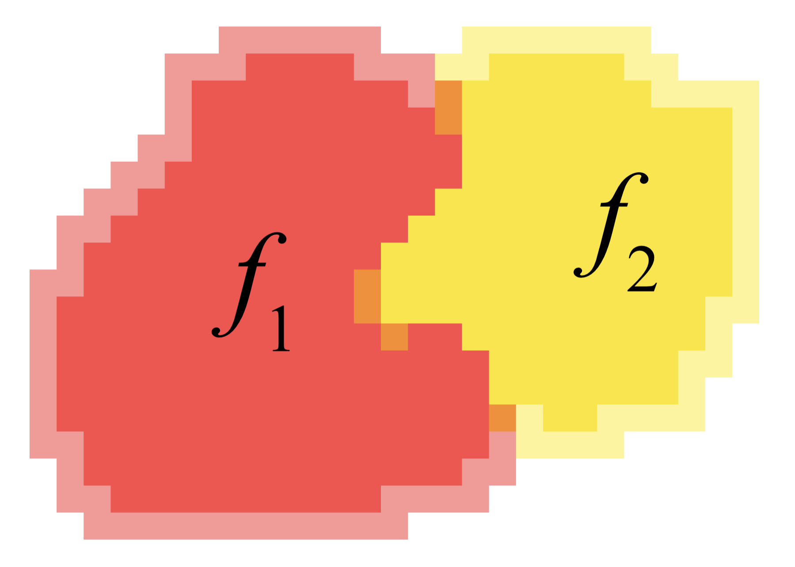
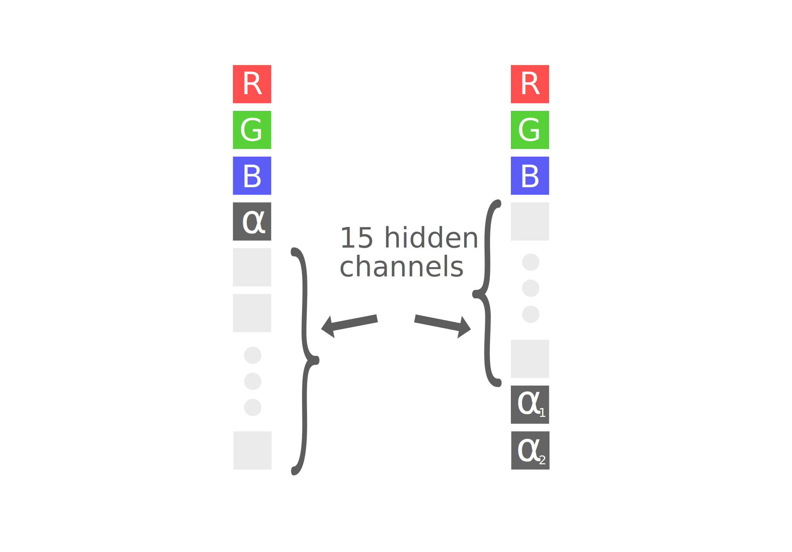

Stopping Aging in Neural Cellular Automata
In this paper we are going to discuss the condition necessary to make a mortal
neural cellular automata, immortal
Figure 1: Example of Regenerating CA
Most living organisms age and eventually die because of it, but a few don’t, and some of
them are incredibly hard to kill, even if you cut their head off, it just regrows
.
Neural Cellular Automata are a very good representation of living organisms: scientists managed
to create cellural automatas that are able to represent any image, some of them after a while
decay (figure 2), others manage to maintain the final state, and some
of them are even able to regenerate damage. (figure 1)
Figure 2: Example of Growing CA, as you can see, they eventually degrade
Introduction
Throughout this paper we are going to use different terms to refer to different types of cellular automatas:
- With “Growing” with capital letter we indicate a neural cellular automata that grows into a final state and then decays, this represents growing and aging biological organisms
- With “Persistent” we indicate a cellular automaton that grows into a final state and then keeps it for an infinite amount of time, some biological organisms like lobsters have this property.
- Finally with “Regenerating” we refer to persistent organisms that are even able to regenerate damage and have a infinite lifespan, biological examples of these are the planarians.
Biological organisms often times blur the line between this categories, for example most aging organisms like ourselves
are able to heal wounds and some like salamanders are even able to regenerate missing limbs,
for practical reasons, however, we are going to stick with these 3 categories
Sometimes we will abbreviate Cellular Automata with CA to make the descriptions less verbose
1 Switching the Rule
First of all we wanted to know if it is possible to take a cellular automata
in the growing mode and after a arbitrary number $n$ of steps
By arbitrary we mean any number of steps before the cellular automata decays
we switch the update rule in order to make it Regenerating. We can write it mathematically like this
$$
\begin{cases}
x_{new}=f_1(x_{old})\quad \textrm{ if }\quad n_{iter} \le n\\
x_{new}=f_2(x_{old})\quad \textrm{ if }\quad n_{iter} > n
\end{cases}
$$
Where $f_1$ is a growing rule and $f_2$ is a rule that we trained to make the organism Regenerating
$n$ in this case should be considered a parameter, that is, if we change $n$ we don't need to change $f_2$, so the switch can happen at any iteration
To make a parallel with a biological system, this is equivalent to asking:
Is it possible to make an organism immortal if we have the ability to change its DNA in every single cell
at once?
This is not entirely a correct statement since there are more ways to change the behaviour of
a biological system, for example you can do so by changing the electric potential .
There is also the possibility that some changes to the update rule are impossible to encode in the DNA by itself,
so the best way to view the switch is by considering it as a change in the way the cells operate.
Since we had already trained a Regenerating CA we tried to substitute it directly into $f_2$, the result
however was a complete failure as can be seen from the video below where the switch happens at $n=30$
This is what happens when we evolve the CA with a $f_1$ that is Growing and then
switch to a $f_2$ that is Regenerating after 40 steps
This outcome at first sight might be surprising, because as can be seen in the first video the visible
RGBA channels of the cell evolve in a similar fashion in the growing and regenerating CA. The hidden
channels however, which are the ones used by the cells to transfer information between them, are
in general completely different, which makes the two CAs incompatible.
A simple example is: suppose that $f_1$ uses hidden channel $1$ to tell if the cell has a dead neighbor,
while $f_2$ uses hidden channel $2$ to pass the same information. If we switch the update rule midway, $f_2$
can’t understand what $f_1$ has encoded and will likely lead to a disruption of the organism.
We can show this behaviour empirically by visualizing the hidden states of the two CAs after they reached
the target state, below we plotted the 6th hidden state after 300 steps of two regenerating CAs trained independently.

 Figure 2: The 6th hidden state after 300 interations of two Regenerating CAs trained independently,
we can see that the CA on the left uses this hidden state to encode something similar to a $x$ coordinate,
while the CA on the right uses the hidden state to represent a sort of distance from the center
Figure 2: The 6th hidden state after 300 interations of two Regenerating CAs trained independently,
we can see that the CA on the left uses this hidden state to encode something similar to a $x$ coordinate,
while the CA on the right uses the hidden state to represent a sort of distance from the center
This means that to make the model work as intended we must train $f_2$ with the goal of making the organism
regenerating, we will call the trained $f_2$ rule Switch.
The only difference between training a Regenerating CA and Switch is the starting pool: instead
of starting with a single dot on the canvas, the pool is initialized by having each element be the output
of $n$ steps of the Growing CA $f_1$. That way Switch learns to start from a state of a Growing CA and reach the
state of a Regenerating one.
The training seemed to be highly dependent from the starting parameters, in particular if we
started from a Regenerating CA the net seemed to converge faster, instead
if we started from a random initialization often times it didn't converge
 Figure 3: Sample of 15 images from the training pool used to train the Switch CA
Figure 3: Sample of 15 images from the training pool used to train the Switch CA
So, does it work if we train Switch with this method?
The answer is yes. Video 1 shows you what happens.
Video 1: Here the rule switches at the 60th step, you can clearly see when the switch happens
Some considerations
As already explained above, different CA rules will use different encodings to store the informations of
the organisms, so here are some other things that you can’t do:
-
You can’t use a Switch CA for a Growing one which has not been trained for
The Switch rule is tailor-made to be able to understand the specific encoding of the Growing rule
- You cannot just swap the Growing rule with another Regenerating (or Persist) rule
For the same reason of the one above and because the regenerating (and the persist) are trained with different starting points
- You cannot salvage a Growing rule that has decayed
We are not trying to resuscitate the dead, and so we didn’t train for it
2 Virus with fixed mask
“The Switch” has some relevant problems that need to be addressed.
First of all during the transition from one rule to the next the system undergoes a major restructuring.
You can see it from video 1: when the switch happens the organism becomes amorphus.
If this was a living organism that needs it’s organs to function 24h a day it will probably die before
the transition is completed.
The second problem is that we need to change every single cell of the organism in order to make it immortal,
in practice, however, we aren’t going to have the precision necessary
to be able to influence every single cell of a organism without missing even one, and,
as you can see from the video below, if some of the cells (marked in blue) don’t transition from $f_1$
to $f_2$ the organism decays rather quickly.

 Video 2: On the left we plotted the cell mask, where the yellow cells evolve according to $f_2$ and the blue ones to $f_1$,
while on the right you can see the evolution video.
We can see that leaving only a couple of cells with the old update rule can be catastrophic for the organism
Video 2: On the left we plotted the cell mask, where the yellow cells evolve according to $f_2$ and the blue ones to $f_1$,
while on the right you can see the evolution video.
We can see that leaving only a couple of cells with the old update rule can be catastrophic for the organism
Randazzo et al. published a paper
in which they change the global properties of a CA by adding some cells that follow a different rule, so the next thing
that we tried to do was to train a $f_2$ that would be able to make a Growing CA into a Persist even
if not all the cells, follow $f_2$ after the switch has happened.
The training proceeds as before, however we switch the update rule of only a percentage of the cells
In video 3 we show what happens with a CA rule trained to switch 70% of the cells. With this technique
we were able to make the switch more flexible and at the same time we managed to avoid the restructuring phase without training for it.
This is because by having some of the old cells still around, the new rule has to learn to
collaborate and influence the old cells to be able to reach a stationary state.
Below we will explore further and provide more explanations for this behaviour
 
Video 3: The rule switches at the 40th step with 80% of new cells, here the transition is not even noticeble

Video 3: The rule switches at the 40th step with 80% of new cells, here the transition is not even noticeble
By the way, the density of new cells does not need to be uniform, it just needs to locally equal
or higher than the minimum percentage

Figure: Evaluation loss as the percentage of cells substituted changes, to have an image close to the target
the loss should be less than $10^{-2}$, so we can see that after 300 iterations most of the CAs decay,
while only the ones with more than 95% of the cells substituted survives until the end
One of the problems is that the effectiveness of the mask decreases as you increase the number of steps,
however it still significantly increase the lifespan of the CA.
In particular from our tests we need a bare minimum of 70% of new cells to be able to increase the lifespan
of the growing CA of a order of magnitude and at least 95% of new cells to be able to make the CA persist indefinitely.
In the graph on the left we plotted the loss as a function of the percentage of cells substituted with
the Growing rule
In order to better understand the graph, below we plotted some images and the corresponding losses

 

$5\times 10^{-3}$
$1\times 10^{-2}$
$5\times 10^{-2}$
Figure: Corresponging images as the loss changes, we can see that for losses $\approx 5\times 10^2$
the image starts to deteriorate significantly
3 Virus with evolving mask
One of the limitations of the fixed mask is that it can’t model what happens when a kind of cells
overtakes the other. This is very important because having the new cells overtake the old ones would be both more biologically plausible and would help
to reduce the minimum percentage of initial cells that need to change update rule.
In an ideal case, we would only substitute a small percentage of cells, then these would be able to gradually overtake the entire organism,
making it immortal.
The minimum percentage required depends from the speed of the aging process, if it's slow
you can start with fewer cells since they will have plenty of time to overtake the old ones
The idea is that the new cells learn to overtake the old one and than make the organism immortal,
so you need to inject fewer cells in the new organism
To be able to answer this we first have to ask ourselves how do we model the evolution of the mask?
3.1 The Model
For simplicity we are going to restrict ourself in the case where we are going to have 2 rules ($f_1$ and $f_2$).
Before, a cell state was represented by a state vector having the first 4 components representing
the RGBA of the pixel and the remaining were hidden channels that helped the CA pass more
information between its cells. If the $\alpha$ channel (transparency) is >0.1 it means
that the cell is alive, otherwise it’s dead
If we are going to have two different types of cells we are going to need two alpha channels.
Since a cell cannot be of both kinds at the same time we choose that if $\alpha_1$ is $>0.1$, then
$\alpha_2$ must be 0, and the cell update follows $f_1$ and vice versa.
When both alphas are below $0.1$, then the cell evolves with the sum of both updates.

Image 1: In this image the red cells evolve following $f_1$, the yellow
follow $f_2$ and the orange ones follow both

Image 2: On the vector on the left represents the old represetation of the CA state, and the one
on the right is the new representation. This new representation of the cells has an additional
$\alpha$ channel and to make the code simpler the alpha channels now are the last two components
3.2 Results
The test we have made so far are unsuccesful, this is because the cells that follow the Growing rule (red),
if they are not sorrounded by the adversarial cells (yellow) will tend to explode.
This is what happens when a old cell is not surrounded by the new cells
This is what happens when a old cell is surrounded by the new cells
3.3 Conclusion
*Work in progress, we are trying to solve this problem*
4 Adding a perturbation
We wanted to know if we can add a small perturbation to the output of a growing cellular automata
in order to make it a persistent one, this is very interesting from a biological perspective
because we can answer the question:
Video 3: Perturbation with $\lambda=10$ METTI QUELLA GIUSTA NUOVA
How much do we need to change the rule (or DNA) in order to have a newborn non-aging organism?
4.1 The Model
We model the perturbation as a function of the cell state, note that the perturbation can be any
function of the cell state, however we chose to use another CA to model it. Finally we compute the
next cell state as a sum of both the growing and the perturbation
$$
w_\textrm{new}=w_\textrm{growing}+ \Delta w
$$
To prevent that the perturbation will overwrite the growing part we added an additional term in the loss,
this term penalizes the L2 norm of the perturbation $|\Delta w|^2$, this term keeps the perturbation
weights as low as possible and avoids that the perturbation will overwrite the growing part of the rule
4.2 Results
It turns out that a very little perturbation can make the growing CA a persistent or even
a regenerating one. Below there is some data and on the side a video that shows the resulting CA output
$$
\frac{|\Delta w|^2}{|w_\textrm{growing}|^2}=0.17
$$
$$
\frac{\langle w_{\textrm{new}}, w_\textrm{growing}\rangle}{|w_\textrm{growing}||w_{\textrm{new}}|}=0.914
$$
There is also an unexpected result!, If you take this model and you use it as a Switch it works, not only that, it also works as a Mask with
a decent performance up to a percentage with 80%
4.3 Conclusion
The rule that the growing learned is very close to a persistent/regenerating one, could this
mean that we need a very little change in the DNA to make a real organism immortal?